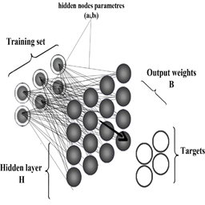

Contents

clear all;clc addpath('codes','dataset');
Load data
D=load('spambase.data'); A=D(:,1:57); % Inputs B=D(:,58); % Targets
define Options
Opts.ELM_Type='Class'; % 'Class' for classification and 'Regrs' for regression Opts.number_neurons=200; % Maximam number of neurons Opts.Tr_ratio=0.70; % training ratio Opts.Bn=1; % 1 to encode lables into binary representations % if it is necessary
Training
[net]= elm_LB(A,B,Opts); net
net =
bn: 'binary Targets'
app: 'Classification'
X: [3220x57 double]
Y: [3220x1 double]
Xts: [1381x57 double]
Yts: [1381x1 double]
IW: [200x57 double]
OW: [200x2 double]
Y_hat: [3220x1 double]
Yts_hat: [1381x1 double]
BnY_hat: [3220x2 double]
BnYts_hat: [1381x2 double]
min: 0
max: 1
Opts: [1x1 struct]
tr_acc: 0.8814
ts_acc: 0.8689
prediction
[output]=elmPredict(net,A);